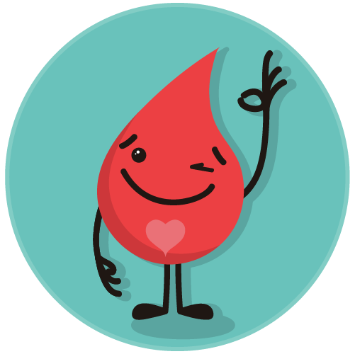

 
<style type="text/css">
 /* JT */
    
    .jumbotron {
        background-size: inherit;
        background-color: #EC4043;
    }
    /* form */

    .progress-bar{
      background-color: #EC4043;
    }
    
    
    .panel-body {
        padding: 30px;
    }
    
    label {
        display: block;
        margin-bottom: 12px;
        cursor: pointer;
    }


    /* botones */

    .btn-sm {
    padding: 10px 20px!important;
    }

    .btn-link{
      color: #EC4043!important;
    }

    #gracias{
      font-weight: 500;
      font-size: 1.7em;
    }

    #mano{
      width: 250px;
    }


        /*cositas*/

    .bg-danger {
        color: white;
        margin: auto!important;
        background-color: #EC4043!important;
    }
    
    .text-danger {
        color: #EC4043!important;
    }
    
    .btn-danger {
        background-color: #EC4043!important;
        width: 100%;
    }

    .btn-danger:hover, .btn-danger:focus {
      opacity: 0.8;
    }


        .titulito{
      font-size: 1.5em;
      font-weight: 500;
    }


    .alert-warning{
      border-color: black!important;
      background-color: transparent!important;

    }

    .link{
    color: #EC4043!important;
}

</style>


<section class="jumbotron" style="background-image: url('img/patternm-sangre.png');">
  <div class="jumbotron_bar">
    <div class="container">
      <div class="row">
        <div class="col-md-12">
          <ol class="breadcrumb pull-left">
            <li><a href="/">Inicio</a></li>
            <li><a href="index.html">Donación de Sangre</a></li>
            <li class="active">Resultado test de donante</li>
          </ol>
        </div>
      </div>
    </div>
  </div>
    <div class="jumbotron_body">
        <div class="container">
            <div class="row">
                <div class="col-md-8 col-md-offset-2 text-center">
                    <h2>¿Quiénes pueden donar?</h2>
                    <p>Respondé las preguntas y enterate si cumplís con los requisitos para poder donar sangre.</p>
                </div>
            </div>
        </div>
    </div>
</section>

<section>
    <div class="container">
        <div class="row">

          <div class="col-md-8 col-md-offset-2 text-center">
              
              
              <h3 class="m-t-2 text-danger h4">¡ESTARÍAS EN CONDICIONES  DE  DONAR!</h3>
              <p class="m-t-2 titulito">Hacete donante voluntario
              <br>Con tu aporte podés salvar hasta 4 vidas</p>
          
        </div>

        <div class="col-md-10 col-md-offset-1 m-t-2">
          <div class="row">
            <div class="col-sm-12 col-md-4">
              <a class="btn btn-danger btn-sm" href="#">Cómo Hacerlo</a>
            </div>
            <div class="col-sm-12 col-md-4">
              <a class="btn btn-danger btn-sm" href="#">Dónde hacerlo</a>
            </div>
            <div class="col-sm-12 col-md-4">
              <a class="btn btn-danger btn-sm" href="#">Preguntas frecuentes</a>
            </div>
          </div>      
        </div>

        <div class="col-md-8 col-md-offset-2 alert alert-warning m-t-3">

          <div class="media">
                    <div class="media-left">
                        <i class="fa fa-info fa-fw fa-3x text-danger"></i>
                    </div>
                    <div class="media-body">
                        <p class="margin-0">Si tenés dudas o querés más información llamá al <b>0800-222-1002</b> o consultá en el <b>centro de donación</b> más cercano a tu domicilio.</p>
                    </div>
                </div>
        </div>

        <div class="col-md-8 col-md-offset-2 m-t-1">

          <p>Consultá los <a class="link" href="https://www.argentina.gob.ar/sites/default/files/criterios-seleccion-donantes_salud.pdf">criterios de selección</a> de donantes de la Direccion de Sangre y Hemoderivados del Ministerio de Salud de la Nacion.</p>

        </div>


    </div>
  </div>
</section>